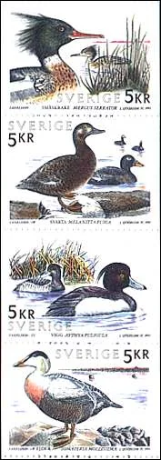
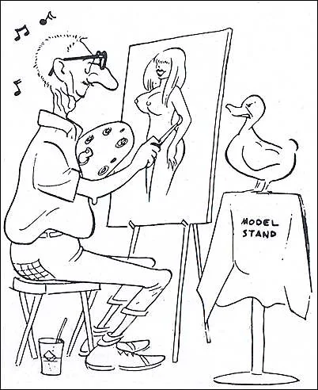
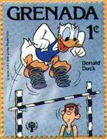
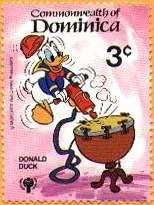
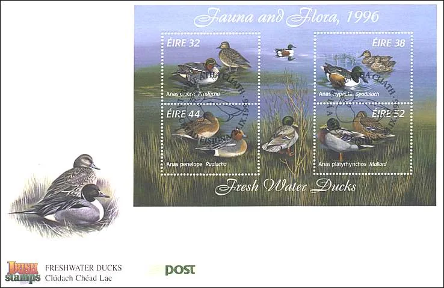
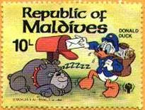
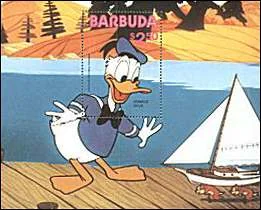
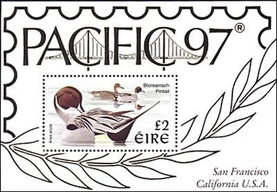
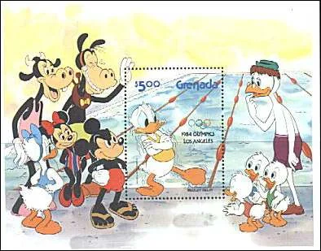

Home / Topicals / Ducks on Stamps
Ducks on Stamps
Carl Barks, Donald Duck and illustrated philately — an article from August 2000.
In order to make a transition between arts on stamps, my main preoccupation, and other topics, I will refer to an article that recently (August 2000) appeared in the Swiss magazine "Die Weltwoche" and entitled "Why is Barks more important than Picasso". The article is signed by Wolfram Knorr.
The author of the article holds the opinion that Barks, the chronicler of the world metropolis House of Ducks, who brought to life an enormous Comédie Humaine of the open society, is more important for the humanity then Picasso was. But the so called high culture ignored him totally, completely unjustly in the eyes of the article's author. In Barks' House of Ducks ruled the Individualism, the Liberalism and the Pragmatism. Barks was never politically correct, but instead excellently illuminating. His melting pot of ducks, geese, swine and dogs delighted for decades millions of people around the globe. Barks died in August, 2000, being aged 99.
Please admire above two Birds sets. One was issued by the Sweden post on Aug. 26, 1993, in a booklet pane of two sets, and shows the birds: Mergis serrator, Melanitta fusca, Aythia fuligula and Somateria molissima. Sc. 2028-2031. The second set, shown on a FDC, was issued by Ireland on Sept. 24, 1996. Appeared under the name "Freshwater Ducks", it shows the following birds: 32p. Anas Crecca; 38p. Anas clypeata; 44p. Anas penelope; 52p. Anas platyhynchos.
Donald Duck was not created by Barks, but because he is for sure the most famous of all ducks, I display on this page some stamps and sheets from Grenada, Dominica, Maldives and Barbuda, showing different moments of Donald's very tormented life.
Original philatelic illustrations








